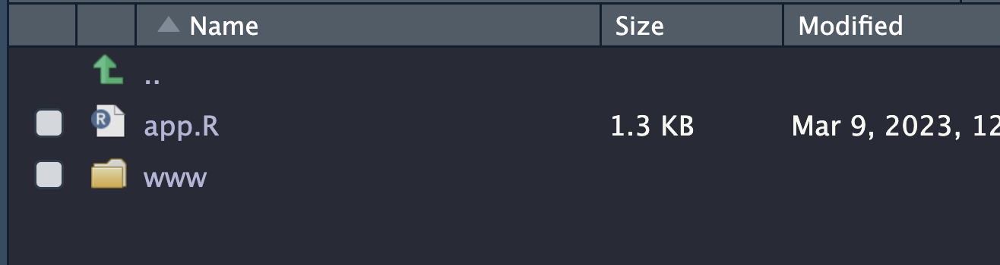
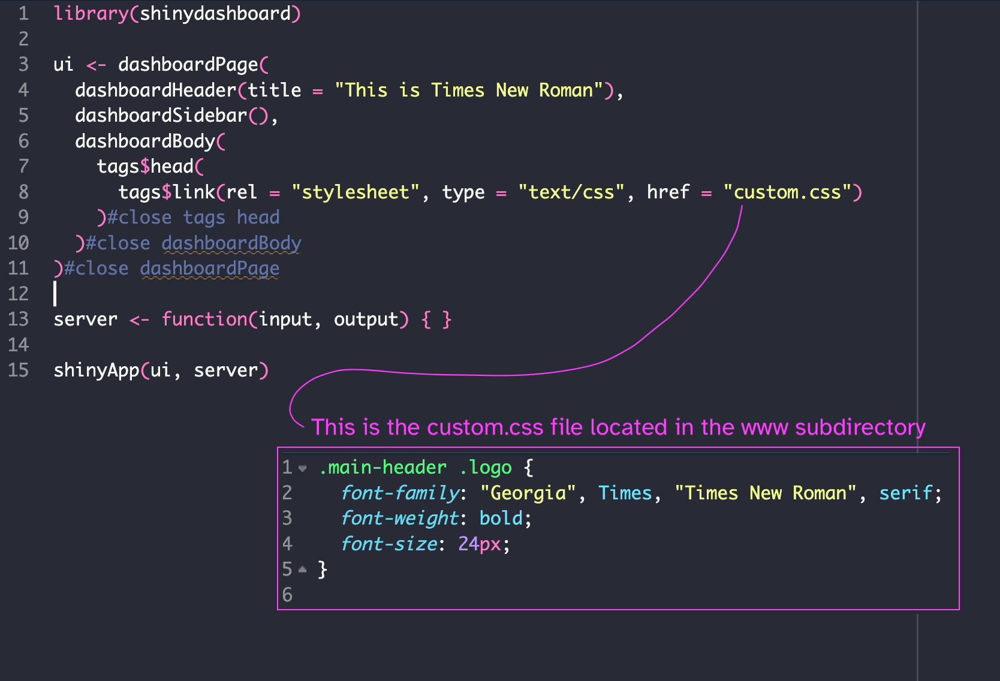

Chapter 12:
Layouts and Dashboards
In this chapter, we will look at how to make your do stuff, respond, and calculate multiple tables and visualizations
Reactive pages
Basics of reactivity
Reactivity refers to the ability of an app to recalculate or perform some action when an input is changed. In a non-reactive Shiny app, all calculations are run when the session begins. However, if you want a user to change an input and display a new calculated result, then reactivity in Shiny apps allow only that part of the app to be computed and re-displayed, not the entire app. This is important for making things fast and able to display immediate changes. So, in a sense, reactivity is something that happens in the background. But, knowing about it will help you use the following functions successfully.
#insert code that shows what happens with input a with and without a reactive function
ui <- fluidPage(
sliderInput("input_1", )
)#close fluidPage
server <- function(input, output){
output
}
shinyApp(ui, server)Two different types of programming: imperative and declarative
imperative is like the analysis functions you’ve been running. you write a series of commands and R executes them. You see errors if something doesn’t match. The UI layout is imperative. you write code that says where something will be, like a radio button or sidebar text.
declarative provides options for the program if conditions are right. So, it might execute the code if conditions are met. This is what we see on the server side function. Its a series of codes that will run if something happens in the UI.
declarative is harder to identify errors, typos, etc. because it running depends on the conditions provided for it.
Code execution order
Unlike imperative, declarative coding such as in the server, run only when needed. so order is not as important in the server function. However, this can make code very difficult to read for humans as we tend to assume top to bottom.
Data can be very large. To prevent this from slowing down the application, every time a new input is sent to the server function, do as much of your data cleaning and manipulation outside of the ShinyApp as possible. Of course, there are just some situations where this is not possible. But as a general rule, keep it minimal inside the ShinyApp. However, you can run code before the ui and server functions if data needs to be cleaned.
#insert example code
take mtcars and apply some calculation based on existing data, maybe $ to drive 100 miles or km in today.In the context of reactive expressions, all code is run when you start a session and results are stored in the cache. This means that if you move a slider and a new value can be retrieved from that cache, your app will show the result. However, if you move a slider and a new calculated value needs to be shown, this value will not be in your cache. You need some part of the app to calculate and store a new value to be shown. This is where reactivity steps in. Only the part of the code that needs to run, is executed - not the entire app. These declarative bits of code are wrapped in reactive function.
In the following section, let’s look at two reactive functions commonly found. More information on reactive functions can be found here in the Shiny documentation.
eventReactive()
This is basic reactivity in that there is no display of information when the session is first run. When you select the actionButton(), the just the part of the code that needs to run updates what you see. This is great for click events like action buttons, radio buttons, or check boxes. Details of the options and examples of eventReactive() can be found here in the documentation.
observeEvent()
observeEvent() has two arguments: eventExpr and handlerExpr. The first input is the input or expression to take a dependency upon, the second is the code that will be executed.
observeEvent() functions provide the set-up for the eventReactive() by observing the data to check for updates. When updates are noticed, the eventReactive() pulls the new updated data and the HTML updates. Note that the following code changes in the HTML to the webpage with the reactive and also prints something in the console.
#source: https://shiny.rstudio.com/reference/shiny/1.7.4/observeevent
ui = fluidPage(
column(4,
numericInput("x", "# of rows of the mtcars dataset", 5),
br(),
actionButton("button", "Show the rows")
),
column(8, tableOutput("table"))
)
server = function(input, output) {
observeEvent(input$button, {
cat("Showing", input$x, "rows\n")
})
df <- eventReactive(input$button, {
head(mtcars, input$x)
})
output$table <- renderTable({
df()
})
}
shinyApp(ui, server)Reactivity in Shiny is regretably complex. However the two functions above cover the most common ones you’ll see. The free, online book, Mastering Shiny, has 4 chapters dedicated to reactivity in Shiny. For now, when you see observeEvent() and eventReactive() functions in code you are getting from other sources, you should recognize these as reactive parts of the app that will update when some input has been changed.
What is session?
Session is an optional argument passed to the server function that enables inputs or outputs related to the current instance of the app to be used. You may see some examples with this.
If you see it in a code example, its likely there to pull an input or output that is unique to this instance and do something with it. You can experiment with removing it or adding it back in with this code;
server <- function(input, output, session){
## some operation here
}#close serverThe session state is used when we need to retrieve some data that has been stored as a result of calculations or inputs from a user’s session. It could be user data, or it could be a file they uploaded that your Shiny app then performed an operation on.
Summary
Reactivity is different due to the nature of declarative programming. It makes code less complex and providies conditions that could be met, rather than a linear progression of code to be executed. We use reactivity so that people can change inputs and receive different outputs or make external actions happen.
Recognizing reactive functions of eventReactive() and observeEvent() and why its used on the back-end of a Shiny app will help in diagnosing and designing your code.
session is added as an optional argument to the server function call
you can put code before the shiny code to reduce calculation time.
observeEvent()sets up the reactivity by signaling which inputs the app should look for change.eventReactive()is used to render or provide some action based on the updated input values.
DataTables
In this section, we are going to explore importing data and displaying it in a DataTable using the DT library. This is different than the data.table library. The DT library makes a lovely table that can be searched, filtered, and sorted which is great for data exploration. You can find more info here and here for the DT documentation.
library(shiny)
library(DT)
ui <- fluidPage(
h2("Some data about flowers"),
DT::dataTableOutput("table_1")
)#close fluidPage
server <- function(input, output) {
output$table_1 = DT::renderDataTable({
iris
})#close output
}#close server
shinyApp(ui, server)Computation output
But what if we wanted to perform some operations on the data, such as to use the summarizing functions you did in earlier chapters on the mtcars dataset? In the code below, we first import some data from a remote location, then create a DataTable for exploration. Then we summarize the data.
library(shiny)
library(DT)
library(tidyverse)
path <- "https://raw.githubusercontent.com/fivethirtyeight/data/master/comic-characters/marvel-wikia-data.csv"
# This will read the first sheet of the Excel file
comics_data <- read_csv(path)
ui <- fluidPage(
sidebarLayout(
sidebarPanel(
h2("How to use DataTables from the DT library"),
br(),
p("To the right is a dataset displayed as a DataTable"),
p("This dataset is from the fivethirtyeight GitHub repository.")
),#close sidebarPanel
mainPanel(
h2("the dataset"),
br(),
DT::dataTableOutput("table_1"),
)#close mainPanel
)#close sidebarLayout
)#close fluidPage
server <- function(input, output) {
data_to_display <- comics_data
output$table_1 <- renderDataTable({
(data_to_display)
})
}#close server
shinyApp(ui, server)First, we can drop urlslug, and page_id. We also want to correct the column names.
library(shiny)
library(DT)
library(tidyverse)
path <- "https://raw.githubusercontent.com/fivethirtyeight/data/master/comic-characters/marvel-wikia-data.csv"
# This will read the first sheet of the Excel file
comics_data <- read_csv(path)
comics_data <- select(comics_data, "name", "ID", "ALIGN", "EYE",
"HAIR", "SEX", "GSM", "ALIVE", "APPEARANCES",
"FIRST APPEARANCE", "Year" ) %>%
rename(Name = name,
Alignment=ALIGN,
Eye = EYE,
Hair = HAIR,
Gender = SEX,
Gender_or_sexual_identity = GSM,
Status = ALIVE,
Appearances = APPEARANCES,
First_appearance = 'FIRST APPEARANCE')
ui <- fluidPage(
sidebarLayout(
sidebarPanel(
h2("How to use DataTables from the DT library"),
br(),
p("To the right is a dataset displayed as a DataTable"),
p("This dataset is from the fivethirtyeight GitHub repository.")
),#close sidebarPanel
mainPanel(
h2("the dataset"),
br(),
DT::dataTableOutput("table_1")#close dataTableOutput
)#close mainPanel
)#close sidebarLayout
)#close fluidPage
server <- function(input, output) {
data_to_display <- comics_data
output$table_1 <- renderDataTable(
data_to_display,
options = list(
scrollX = TRUE,
scrollY = TRUE,
autoWidth = TRUE,
rownames = FALSE)
) #close renderDataTable
}#close server
shinyApp(ui, server)You can see from this example, there are new options added to the renderDataTable() function. We also modified our data before the ui. You can find an excellent explanation of options as well as beautiful integration with the formattable library from this blog.
Dashboards
Dashboards provide a quick overview of your dataset, and can be used for monitoring or supporting further exploration. Of course, you can use what you’ve just learned about Shiny apps to create a dashboard.
#example of shinyapp with fluidrows and columns for a dashboardWe can also use the shinydashboard library to create a dashboard with multiple graphs and tables. You can find the documentation for shinydashboard here. In the rest of this chapter, we’ll be going through shinydashboard. shinydashboard uses an HTML template which makes layout of a dashboard a little easier to manage.
You will need to install the package in the command line of your console.
install.packages("shinydashboard")Basic structure
Below is a basic shinydashboard. Within the ui, everything is wrapped in a dashboardPage() function and includes the header, sidebar, and body. Elements that are to be in the header are placed within the dashboardHeader() function, and sidebar elements are placed within the dashboardSidebar() function, and so on. You can find examples of shinydashboard apps here in the GitHub repository.
library(shiny)
library(shinydashboard)
ui <- dashboardPage(
dashboardHeader(),
dashboardSidebar(),
dashboardBody()
) #close dashboardPage
server <- function(input, output) { }
shinyApp(ui, server)However, for more complicated dashboards, you can also split the app into peices, assigning header, sidebar, and body as variables that you call later within the Shiny app. You will see examples of both these structures in the documentation.
library (shinydashboard)
header <- dashboardHeader()
sidebar <- dashboardSidebar()
body <- dashboardBody()
ui<- dashboardPage(header, sidebar, body)
server <- function(input, output) {}
shinyApp(ui, server)File Management
As shinydashboard creates HTML for displaying a webpage, we need to follow some protocols. The convention is to have a working directory that you are creating the app.R file in. Included in the working directory is a folder called ‘www’. Anything related to the shinydashboard goes in here, whether you are linking to an image or a CSS style sheet.


Header options
The header can not only contain the title, but it can also be a useful space to include a logo.
library (shinydashboard)
logo = tags$a(href="https://thenounproject.com/icon/pony-29745/",
tags$img(src='pony_tiny.png'),
"Pony")
header <- dashboardHeader(title = logo,
titleWidth = 100)
sidebar <- dashboardSidebar()
body <- dashboardBody()
ui<- dashboardPage(header, sidebar, body)
server <- function(input, output) {}
shinyApp(ui, server)There are other options for headers such as messages and tasks that can be found in the documentation here.
Body options
Multiple graphs & tables
Of course, a dashboards are meant to convey a lot of information in a concise way, so having multiple graphs and supporting tables is important. The code below shows how mulltiple graphics along with a table are created in the ui and called in the server function.
# lots of graphs and a table for the mtcars dataset
# or comics dataset from fivethirtyeight?Icons
Using icons is a great way to reduce visual clutter on your dashboard. Shinydashboard pulls icons from FontAwesome. Below is an example of using icons in a sidebar menu.
#icons in use in the sidebarStyling dashboards
Shinydashboards can be styled beyond the basics, however, this requires some rather indepth knowledge of Javascript. Basic styling can be achieved by….
There are also two other libraries that may be of interest if styling is required for your project. One is shiny.semantic and the other is shinydashboardplus.
Using shiny.semantic
This is an alternative that provides different styling options. You may find its use of HTML style syntax helpful and similar to Shiny.
https://appsilon.github.io/shiny.semantic/